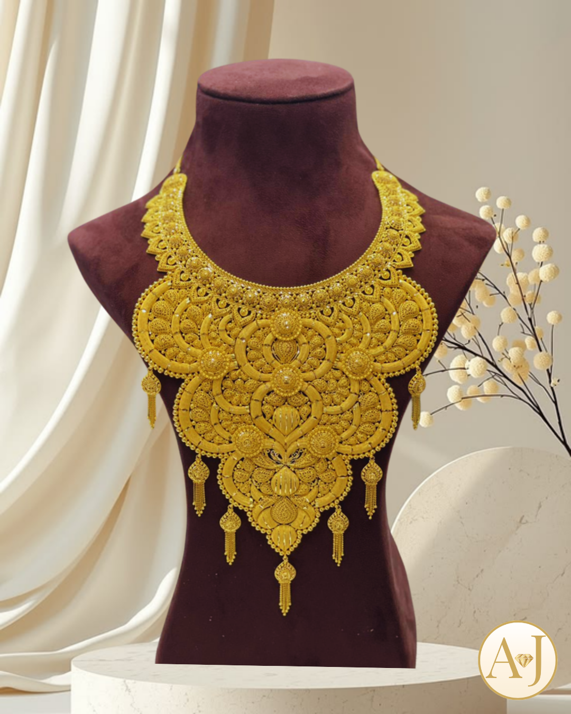

Manufacturing
Gold jewellery brought to life by the hands and judgement of master artisans.
Our Foundation
Our handmade capability preserves the time-honoured techniques at the heart of Azza Jewels. From forming and assembling to engraving, setting and final polishing, each piece is carefully worked at the bench by experienced artisans.
It is where intricate character, bespoke details and the warmth of a truly hand-finished jewel come together.
The Handmade Process
Ideas are translated into precise forms, prototypes and components.
Goldsmiths shape, assemble and refine each element by hand.
Every surface is polished and checked before it carries the Azza name.

Made in Oman
Our handmade jewellery blends the knowledge of traditional craft with a modern design sensibility.
Discuss a requirement